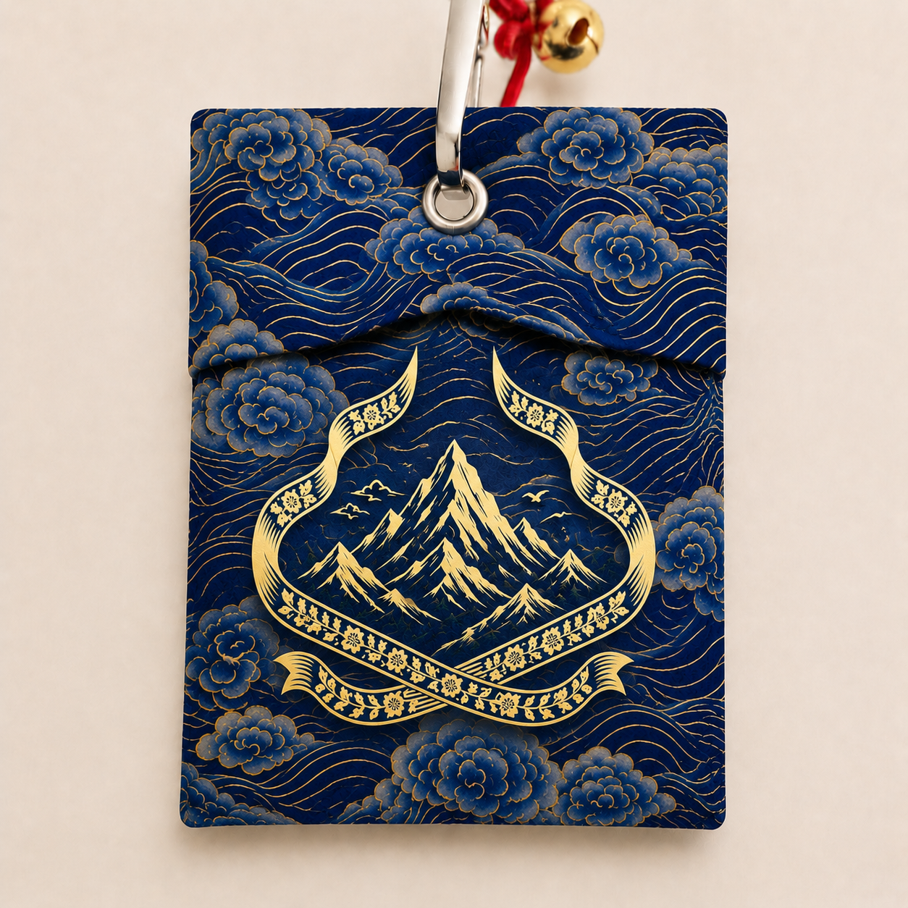
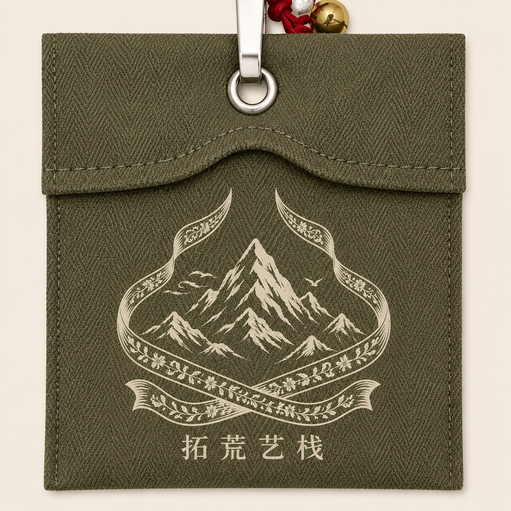
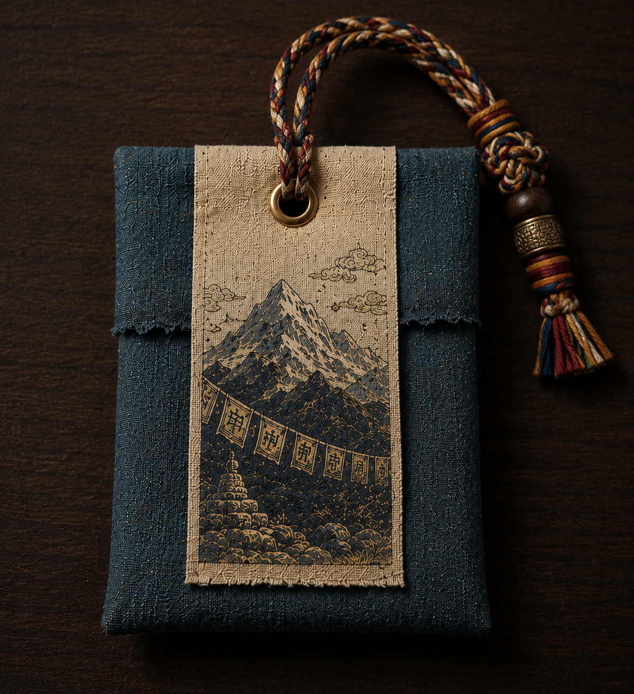

产品定位 / 山行系列首款
山行·祈福香囊
小型三角帐杆形状，既像帐篷结构，也像山峰轮廓。它可以挂在背包、帐篷入口或旅行箱上，成为出发前可以看见的平安仪式。
- 正式名：山行·祈福香囊
- 英文名：Mountain Walker's Blessing Pouch
- 口语名：山行囊 / 山影香囊 / 护身香
Brand Origin
山行·祈福香囊是拓荒艺栈旗下“山行系列”的首款产品。它不是单纯装饰，而是一枚为徒步、登山、露营和旅行设计的中草药护身符。
产品把藏区草药文化、登山文化和探险者的平安信念转译成可触摸的物件：耐磨布料、可替换内囊、爬山绳挂绳、小铜角、山脉刺绣与限量编号共同构成品牌识别。
Product System
从外观形制、材质工艺到使用场景，拓荒艺栈把户外实用和山野祈福放在同一个克制的视觉系统里。

产品定位 / 山行系列首款
小型三角帐杆形状，既像帐篷结构，也像山峰轮廓。它可以挂在背包、帐篷入口或旅行箱上，成为出发前可以看见的平安仪式。

材质与工艺
外布使用原色粗麻或爬山绳织物，配小铜角保护和红、蓝、黄、绿缝线，让手作质感保持耐磨和克制。

包装与编号
旧木、编绳、山形标签和编号铜牌建立“手作但不粗糙”的产品语境，使香囊从随身小物升级为可收藏礼物。
户外登山
山风吹过时带来草木清香，也让“安全归来”的祈愿始终跟随出发者。
野营夜间
艾叶、藿香、丁香与薄荷形成驱蚊、凝神、提神的户外实用层。
旅行赠礼
不是普通纪念品，而是一句可以被携带的祝福：平安回来。
日常收纳
内囊可拆洗替换，原香味约持续 2-3 个月，方便长期使用。
Herbal Formula
每枚香囊内装约 5-8g 中草药颗粒，保留草木质地，不做粉末化处理。
喜马拉雅山区草药，安神开窍，形成山野清香的核心气味。
传统护身草药，驱蚊防虫，带有净化与庇护感。
化湿解暑，清爽提神，是夏日山路里的清凉气息。
补足明目、暖香、清凉与静心层次，让配方兼顾实用和仪式。
Contact / Collaboration
拓荒艺栈正在完善山行系列的产品视觉、包装系统与内容传播。适合合作：产品拍摄、户外文创、品牌联名、礼盒定制与渠道合作。